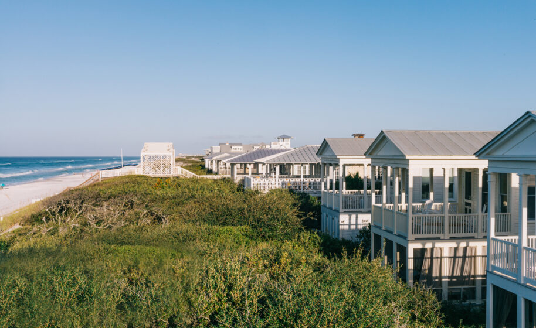

SEASIDE,FL
The seaside is my favorite place in the summer because I’ve always gone there with my family and friends. We spend the days swimming, relaxing on the sand, and enjoying the warm weather together. One of my favorite memories is celebrating the 4th of July there every year, watching fireworks over the water and feeling the cool ocean breeze. Being at the seaside makes me feel happy and connected to the people I care about, which is why it’s so special to me.